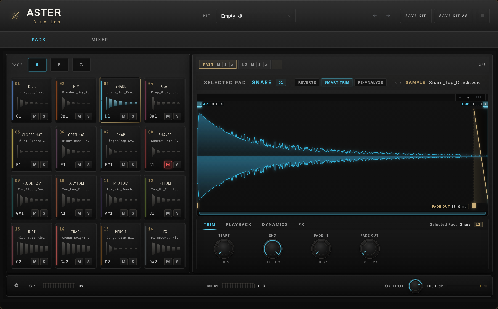
48パッド・最大8レイヤーのサンプル設計、緻密なトリム＆再生コントロール、レイヤー単位のFXチェーン、そして48アウトのミキサールーティングを1つに凝縮した、モダンなドラム制作のための楽器です。
本書は ASTER Drum Lab のすべての機能を、実際の画面とともに解説するユーザーマニュアルです。はじめての方は「クイックスタート」から、特定の機能を調べたい方は下記の目次からご覧ください。
ASTER Drum Lab は、自分のサンプルを読み込み、叩き、磨き上げて、完成したドラムキットへと仕上げるためのサンプラー型インストゥルメントです。各パッドは独立した音作りチェーンを持ち、レイヤーを重ねて厚みを出したり、ベロシティで音色を切り替えたりできます。
各レイヤーで作った音がパッドでまとめられ、アサインした出力からDAWへ送られます。
VST3 / AU プラグイン、およびスタンドアロンアプリに対応しています。お使いのDAWに合わせてフォーマットを選んでください。
| フォーマット | 対応環境 |
|---|---|
| VST3 | Windows / macOS — 主要DAW全般 |
| Audio Unit (AU) | macOS — Logic Pro / GarageBand / Live 等 |
| Standalone | Windows / macOS — DAW不要で単体起動 |
各パッドを個別の出力へ送るには、DAW側でマルチアウトプット構成で読み込み、OUT MODE を 16 / 32 / 48 Outs に設定します（→「15. ルーティング」）。
メイン画面は大きく分けて、上部のヘッダー、左のパッドグリッド、右のエディタ、下部のフッターで構成されます。各部の役割を番号で確認しましょう。
5つのステップで、空のキットから自分だけのドラムキットを作り上げる流れを体験しましょう。
Finder / エクスプローラーから音声ファイル（WAV / AIFF / FLAC / MP3 など）をパッドへドラッグ＆ドロップ。または右クリック →「Load Sample…」で選びます。
波形上の START / END ハンドルで鳴らす範囲を決め、FADE でクリックノイズを除去。SMART TRIM で頭の無音を自動カットできます。
PLAYBACK タブで Volume / Pan / Pitch、再生モード（One Shot / Gate）、Choke、発音数を設定します。
DYNAMICS でベロシティの反応を、FX で EQ・コンプ・サチュレーションなどを加えて質感を仕上げます。
MIXER で音量バランスと出力を整え、SAVE KIT AS で自分のキットとして保存します。
あとは MIDI で叩くだけ。パッドのMIDIノート（既定 C1〜）に合わせて打ち込み、トラックを鳴らしましょう。
画面左に並ぶ16個のパッドが、ASTER Drum Lab の中心です。3つのバンク（A / B / C）を合わせて、合計48パッドを扱えます。
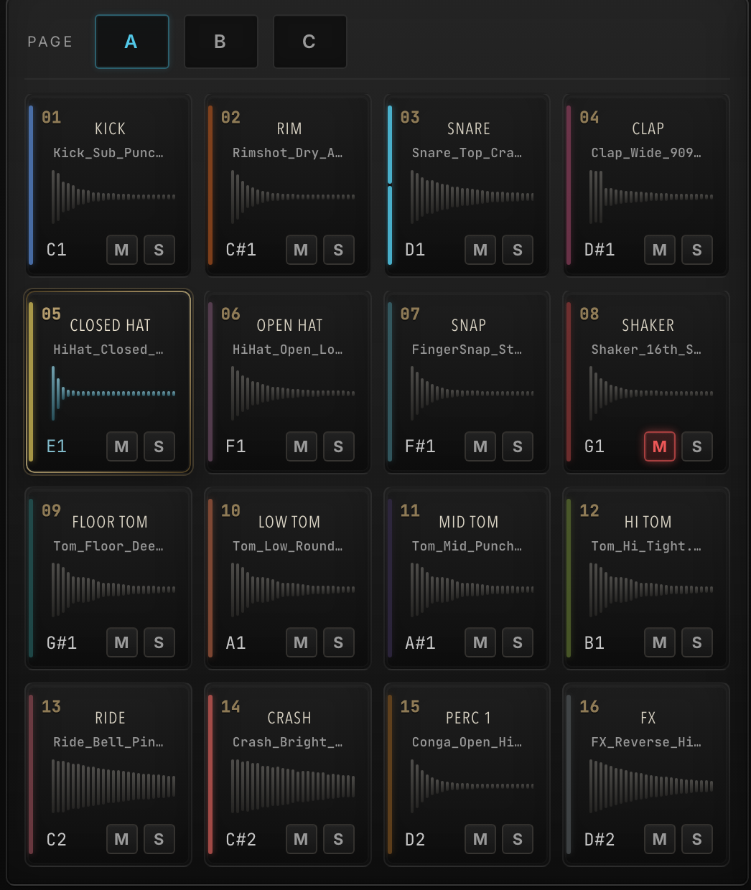
| 表示 | 意味 |
|---|---|
| 番号 | パッド番号（01〜16 / バンク内） |
| 名前 | パッド名（クリックで変更可） |
| サンプル名 | 読み込み中のファイル名 |
| MIDIノート | このパッドを鳴らす音名（例：C1） |
| カラー帯 | パッドの識別カラー |
パッドを右クリックすると、サンプルの読み込みからレイヤー操作、色・名前・MIDIノートの変更まで、そのパッドに関するすべての操作にアクセスできます。
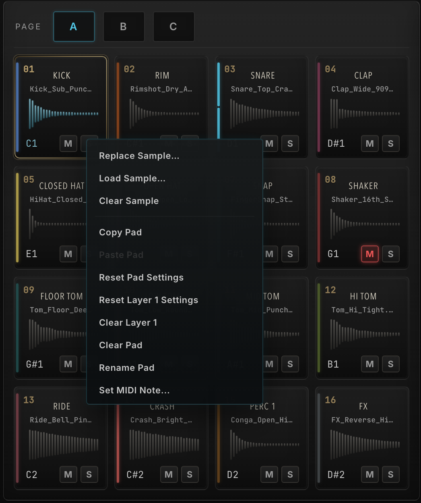
| 項目 | 動作 |
|---|---|
| Load / Replace Sample | サンプルを読み込み／差し替え |
| Clear Sample | サンプルを外す |
| Add / Duplicate Layer | レイヤーを追加／複製 |
| Copy / Paste Pad | パッド設定をコピー／貼り付け |
| Reset Pad Settings | 再生系パラメータを初期化 |
| Reset Layer N | そのレイヤーの音作りを初期化 |
| Clear Layer N | レイヤーのサンプル＋設定を消去 |
| Clear Pad | パッドを空に（MIDI/出力は保持） |
| Rename Pad | パッド名を変更 |
| Set MIDI Note… | MIDIノート指定（MIDIラーン対応） |
| Change Pad Color… | カラーを変更 |
| Reveal Sample | 元ファイルをFinder/Explorerで表示 |
1つのパッドには最大8つのレイヤーを重ねられます。複数のサンプルを同時に鳴らして音に厚みを出したり、ベロシティ（叩く強さ）で鳴らすレイヤーを切り替えたりできます。
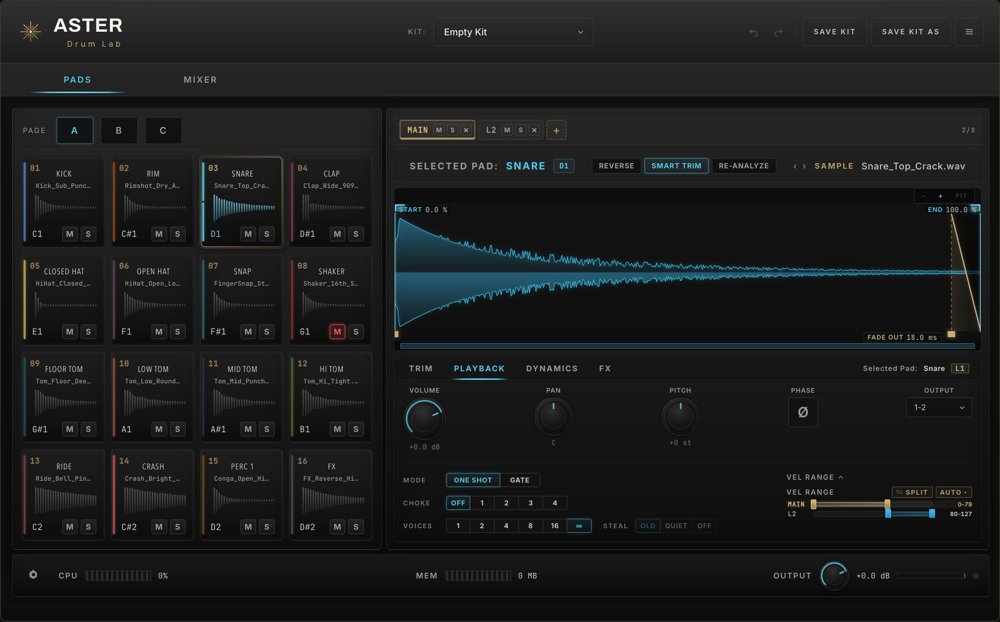
2つ以上のレイヤーがあるとき、PLAYBACKタブに VEL RANGE が表示されます。各レイヤーに発音するベロシティ範囲（0〜127）を割り当てることで、
SPLIT は全レイヤーへ範囲を均等分割、AUTO は追加時に自動で範囲を割り当てます。
選択中レイヤーのサンプルが波形で表示されます。ドラッグ操作で再生範囲とフェードを直感的に編集できます。
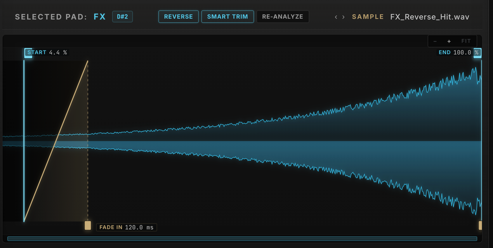
| 操作 | 内容 |
|---|---|
| START / END | 左右の縦ラインで再生範囲を指定 |
| FADE IN/OUT | 下部のハンドルでフェード長を設定 |
| ダブルクリック | 各ハンドルを初期値へリセット |
| Cmd/Ctrl＋ドラッグ | 微調整（ファイン）モード |
| ボタン | 内容 |
|---|---|
| REVERSE | サンプルを逆再生 |
| SMART TRIM | 頭の無音／最初のアタックを自動検出して START を合わせる |
| RE-ANALYZE | サンプルを再解析（波形・トリム再計算） |
＋ / − ボタンや Cmd/Ctrl＋ホイール で拡大、Shift＋ホイール で左右スクロール、波形をダブルクリックで全体表示（FIT）に戻ります。表示倍率は保存されません。
再生範囲とフェードを数値ノブで精密に設定するタブです。波形上のハンドル操作と連動します。
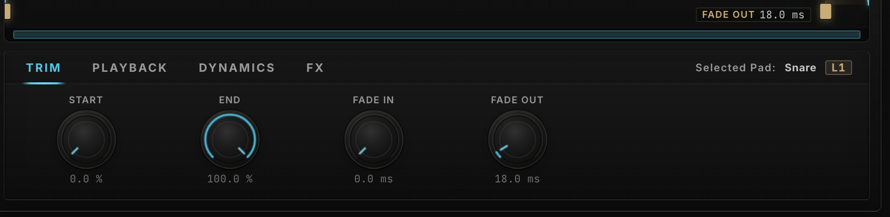
| パラメータ | 範囲 | 説明 |
|---|---|---|
| START | 0 – 100 % | 再生を開始する位置。頭の不要部分をカットします。 |
| END | 0 – 100 % | 再生を終了する位置。末尾の不要部分をカットします。 |
| FADE IN | 0 ms – | 立ち上がりのフェード。アタックのクリックノイズを除去します。 |
| FADE OUT | 0 ms – | 終わりのフェード。プツッという切れを防ぎます。 |
音量・パン・ピッチといった基本から、再生モード、チョーク、発音数（ポリフォニー）まで、パッドの「鳴り方」を決めるタブです。
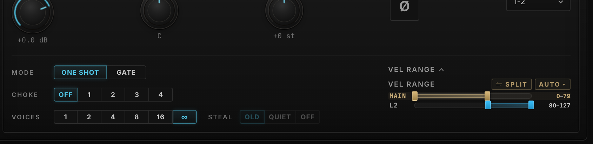
| 名称 | 範囲 |
|---|---|
| VOLUME | −∞ – 0 dB + |
| PAN | L ↔ C ↔ R |
| PITCH | −24 – +24 st |
| PHASE (Ø) | 位相反転 |
| OUTPUT | 出力アサイン |
| One Shot | キーを離しても最後まで再生 |
| Gate | 押している間だけ再生 |
同じチョークグループ（1〜4）に属するパッドは、片方を鳴らすともう片方が止まります。クローズ／オープンハイハットの鳴き分けに最適です。OFF で無効。
VOICES はこのパッドの同時発音数（1 / 2 / 4 / 8 / 16 / ∞）。上限に達したときの挙動を STEAL で選びます。
| OLD | 最も古い音を止める |
| QUIET | 最も小さい音を止める |
| OFF | 新しい音を鳴らさない |
エンベロープと、演奏の強弱（ベロシティ）への反応を設定します。打ち込みに人間らしいニュアンスを加えるのに役立ちます。
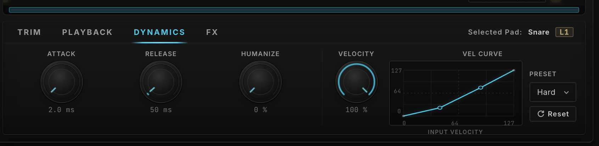
| パラメータ | 範囲 | 説明 |
|---|---|---|
| ATTACK | 0 – 2000 ms | 音の立ち上がりの速さ。長くするとソフトな入りに。 |
| RELEASE | 0 – 4000 ms | 発音終了後の余韻の長さ。 |
| HUMANIZE | 0 – 100 % | 発音ごとに音量・タイミングを微妙に揺らし、機械的な反復を緩和。 |
| VELOCITY | 0 – 100 % | ベロシティ感度。0%でベロシティを無視（一定音量）、100%で最大限反応。 |
| VEL CURVE | プリセット / Custom | ベロシティ→音量の変換カーブ。 |
入力をそのまま反映（標準）。
弱打でも音量が出やすい。
強く叩いたときだけ大きく。
音量差を圧縮し均一に。
音量差を強調しメリハリ。
カーブ上の2点をドラッグして自作。
各レイヤーは独立したFXチェーンを持ちます。EQ・フィルター・ドライブ・トランジェント・コンプの5種類を、自由な順番で組み合わせられます。
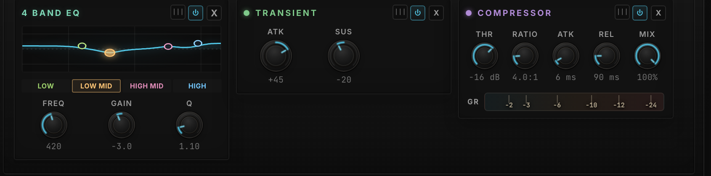
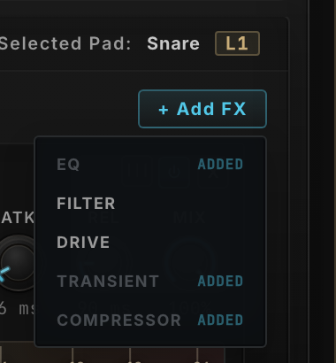
それぞれのFXモジュールの役割と主なパラメータです。ドラムの整音に必要な処理を一通り内蔵しています。
| バンド | 種類 | 用途 |
|---|---|---|
| LOW | Shelf / Cut | 低域のブースト／カット。芯や重さを調整。 |
| LOW MID | Bell | こもり（200〜500Hz付近）の処理。 |
| HIGH MID | Bell | アタックや存在感（2〜4kHz）を強調。 |
| HIGH | Shelf / Cut | 高域の明るさ・空気感を調整。 |
各バンドは FREQ（周波数）/ GAIN（増減）/ Q（幅） を持ちます。カーブを直接ドラッグして編集することも可能です。
独立したハイパス（HP）とローパス（LP）。スロープは 12 / 24 / 48 dB/oct、レゾナンスも各々設定可。両方を有効にするとバンドパス的に使えます。
7種のキャラクター（Soft / Hard / Tube / Tape / Fold / Bit Crush / Rate）で歪み・質感を付加。DRIVE（量）/ TONE / MIX / OUTPUT で調整します。
ATTACK でアタックの強さ、SUSTAIN で余韻を ±方向に調整。叩きを際立たせたり、逆にルームを抑えたりできます。
| THRESHOLD | −48 – 0 dB |
| RATIO | 1:1 – 20:1 |
| ATTACK | 1 – 80 ms |
| RELEASE | 10 – 500 ms |
| MIX | 0 – 100 % |
上部の MIXER タブでは、現在のバンクにある16パッドの音量・パン・出力を、チャンネルストリップとしてまとめて操作できます。
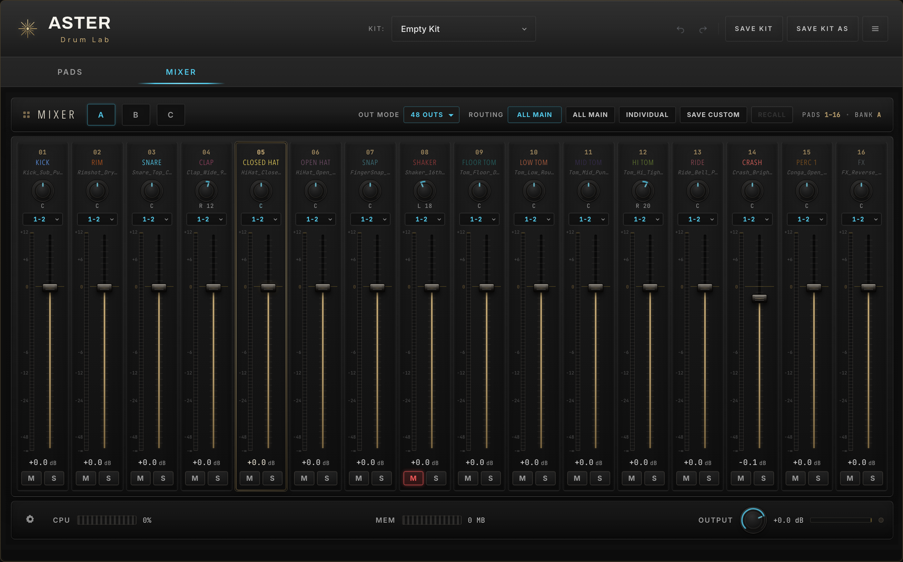
| 要素 | 内容 |
|---|---|
| PAN | 定位（上部ノブ） |
| OUTPUT | 出力先のアサイン |
| フェーダー | 音量（0 dB＝ユニティ） |
| dB値 | ダブルクリックで数値入力 |
| メーター/CLIP | レベル表示。CLIP点灯はクリックで解除 |
| M / S | ミュート／ソロ |
フッターには CPU / MEM メーターと、全体音量を司る マスター OUTPUT ノブ（クリップLED付き）があります。
ASTER Drum Lab は最大48の出力を備え、各パッドを個別のDAWチャンネルへ送れます。出力構成はミキサー上部に集約されています。
| モード | 内容 |
|---|---|
| STEREO | メインL/Rのみ（1ステレオ） |
| 16 OUTS | 16系統の個別ステレオ出力 |
| 32 OUTS | 32系統の個別ステレオ出力 |
| 48 OUTS | 48系統＝全パッド個別出力 |
DAW側のマルチアウト構成と合わせて使います。各パッドの OUTPUT で送り先（例：1-2、3-4 …）を指定します。
| ボタン | 動作 |
|---|---|
| ALL MAIN | 全パッドをメイン出力(1-2)へ |
| INDIVIDUAL | Pad1→Out1、Pad2→Out2…と連番で個別アサイン |
| SAVE CUSTOM | 現在の48パッドのルーティングを一時保存 |
| RECALL | 保存したルーティングを呼び戻す |
現在の状態は ALL MAIN / INDIVIDUAL / CUSTOM と表示されます。
作り込んだ48パッドの構成は「キット」として保存・読み込みできます。ヘッダーの KIT セレクタと SAVE ボタンが入口です。
| 操作 | 内容 |
|---|---|
| SAVE KIT | 現在のキットに上書き保存 |
| SAVE KIT AS | 名前を付けて新規保存 |
| KIT セレクタ | 保存済みキットを選んで読み込み |
| Rescan Kit Folder | キットフォルダを再スキャン |
| Reveal Kit Folder | キットの保存場所を開く |
キット読み込み時、取り込む要素を選べます。例えば「サンプルはそのままに、ミキサー設定だけ別キットから読む」といった使い方が可能です。
キットを別環境へ移したなどで元のサンプルが見つからない場合、上部に MISSING タブが現れ、該当パッドが赤く表示されます。
フッター左の歯車（⚙）から動作の設定を、ヘッダー右のメニュー（≡）から表示サイズを変更できます。
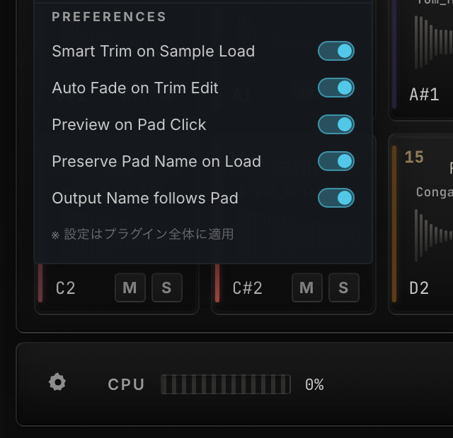
| 項目 | 内容 |
|---|---|
| Smart Trim on Sample Load | 読込時に自動でスマートトリム |
| Auto Fade on Trim Edit | トリム編集時に自動フェード |
| Preview on Pad Click | パッドクリックで試聴 |
| Preserve Pad Name on Load | 読込してもパッド名を保持 |
| Output Name follows Pad | 出力名をパッド名に追従 |
設定はプラグイン全体に適用されます。⚙メニューには About / Version と Check for Updates もあります。
ヘッダー右の ≡ メニューから、画面全体の表示倍率を選べます。
50% 75% 100% 120% 150% 175% 200%
高解像度ディスプレイでは拡大、画面が狭いときは縮小して、見やすさと作業領域のバランスを取ってください。
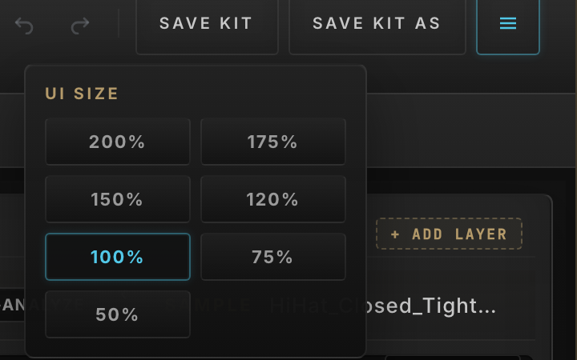
よく使う操作と、製品の主な仕様の一覧です。
| 操作 | 動作 |
|---|---|
| Cmd/Ctrl+Z | 元に戻す（Undo） |
| Cmd/Ctrl+Shift+Z | やり直し（Redo） |
| ダブルクリック | 数値を直接入力 |
| Option/Alt＋クリック | ノブ／フェーダーを初期値へ |
| Cmd/Ctrl＋ドラッグ | 微調整（ファイン） |
| Cmd/Ctrl＋ホイール | 波形をズーム |
| Shift＋ホイール | 波形を左右スクロール |
| 波形をダブルクリック | 全体表示（FIT）に戻す |
| Shift / Cmd＋クリック | ミキサーで複数選択 |
| パッドをドラッグ | 音色を入れ替え |
| 項目 | 内容 |
|---|---|
| 製品名 | ASTER Drum Lab |
| メーカー | ENIGMA |
| バージョン | 1.0.0 |
| タイプ | ドラムサンプラー／インストゥルメント |
| フォーマット | VST3 / AU / Standalone |
| パッド数 | 48（16×3バンク） |
| レイヤー | 最大8／パッド |
| 再生モード | One Shot / Gate |
| チョーク | 4グループ |
| FX | EQ / Filter / Drive / Transient / Compressor |
| 出力 | Stereo / 16 / 32 / 48 Outs |
| 対応形式 | WAV / AIFF / FLAC / MP3 / OGG |
よくある質問と対処法です。解決しない場合はサポートまでお問い合わせください。
元のファイルが移動／削除された状態です。MISSING タブまたはパッドの RELINK から、ファイルを選び直してください（同名ファイルはまとめて解決されます）。